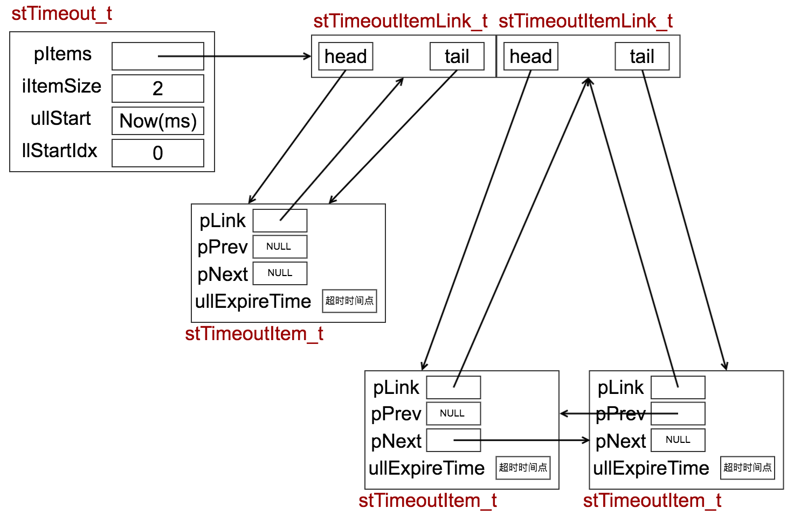
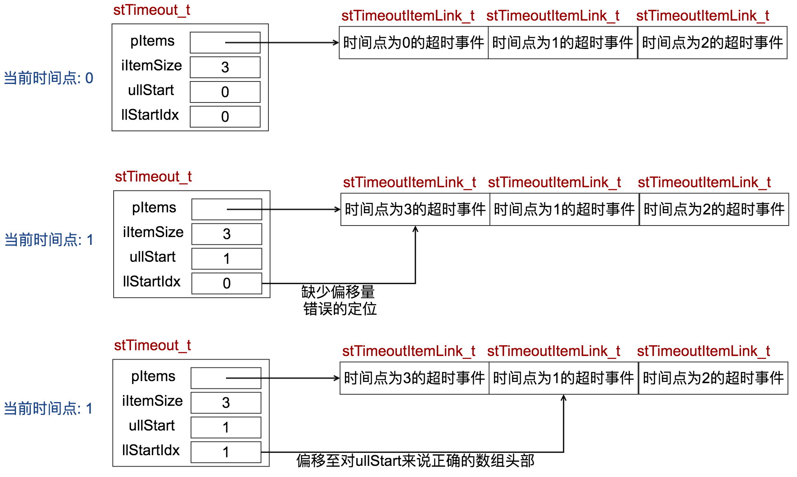

<!DOCTYPE html>
<!--[if IEMobile 7 ]><html class="no-js iem7"><![endif]-->
<!--[if lt IE 9]><html class="no-js lte-ie8"><![endif]-->
<!--[if (gt IE 8)|(gt IEMobile 7)|!(IEMobile)|!(IE)]><!--><html class="no-js"><!--<![endif]-->
<head>
  <meta charset="utf-8">
  <title>
    
  libco 源码阅读 · 事件循环调度器 - zerolocust
  

  </title>
  <meta name="author" content="">
  <meta name="description" content="locustchen的博客">

  <meta name="HandheldFriendly" content="True">
  <meta name="MobileOptimized" content="320">
  <meta name="viewport" content="width=device-width, initial-scale=1">
  
  <link href="asset/css/screen.css" media="screen, projection" rel="stylesheet" type="text/css">
  <link href="atom.xml" rel="alternate" title="zerolocust" type="application/atom+xml">
  <script src="asset/js/modernizr-2.0.js"></script>
  <script src="asset/js/jquery.min.js"></script>
  <script src="asset/highlightjs/highlight.pack.js"></script>
  <link href="asset/highlightjs/styles/solarized_light.css" media="screen, projection" rel="stylesheet" type="text/css">
  <script>hljs.initHighlightingOnLoad();</script>

  <style type="text/css">
  .cat-children-p{ padding: 6px 0px;}
  .hljs{background: none;}
  </style>
  <script type="text/javascript">
  var isAddSildbar = true;
  </script>
  <script src="asset/js/octopress.js" type="text/javascript"></script>
</head>
<script type="text/javascript">
//链接新开窗口
function addBlankTargetForLinks () {
  $('a[href^="http"]').each(function(){
      $(this).attr('target', '_blank');
  });
}
$(document).ready(function(event) {
  addBlankTargetForLinks();
});
</script>
<body   >
  <header role="banner"><hgroup>
  <h1><a href="index.html">zerolocust</a></h1>
  
    <h2>locustchen的博客</h2>
  
</hgroup>

</header>
  <nav role="navigation"><ul class="subscription" data-subscription="rss">
  <li><a href="atom.xml" rel="subscribe-rss" title="subscribe via RSS">RSS</a></li>
  
</ul>
  
<form action="http://google.com/search" method="get">
  <fieldset role="search">
    <input type="hidden" name="q" value="site:zerolocusta.github.io" />
    <input class="search" type="text" name="q" results="0" placeholder="Search"/>
  </fieldset>
</form>
  
<ul class="main-navigation">

  <li id=""><a target="self" href="index.html">Home</a></li>

  <li id=""><a target="_self" href="archives.html">Archives</a></li>

</ul>

</nav>
  <div id="main">
    <div id="content"> 
<div>
	<article class="hentry" role="article">
	<header>
			  	<h1 class="entry-title">libco 源码阅读 · 事件循环调度器</h1>
				<p class="meta"><time datetime="2017-09-20T11:18:06+08:00" pubdate data-updated="true">2017/9/20 11:18 上午</time></p>
			 </header>
		  	<div class="entry-content">
			  	<blockquote>
<p>libco中, 将多路复用I/O配合事件循环与协程调度结合起来了</p>
</blockquote>

<h2 id="toc_0">1.1 <code>co_eventloop</code>, 启动事件循环</h2>

<p>libco中启动事件循环的函数是<code>co_eventloop</code>, 这个函数将epoll(bsd下是kqueue)和协程的调度策略结合起来<br/>
<code>co_eventloop</code>的签名</p>

<pre><code class="language-c">void co_eventloop(stCoEpoll_t *ctx, pfn_co_eventloop_t pfn, void *arg)
</code></pre>

<p>逐个分析<code>co_eventloop</code>的形参列表</p>

<ul>
<li> <code>stCoEpoll_t</code></li>
</ul>

<pre><code class="language-c++">struct stCoEpoll_t
{
    // epoll fd
    int iEpollFd;
    // epoll结果数组的大小
    static const int _EPOLL_SIZE = 1024 * 10;
    // 用于存放所有超时事件
    struct stTimeout_t *pTimeout;
   // 用于存放已经超时的事件
    struct stTimeoutItemLink_t *pstTimeoutList;
   // 用于存放已就绪事件
    struct stTimeoutItemLink_t *pstActiveList;
   // 用于存放epoll返回结果
    co_epoll_res *result;
};
</code></pre>

<ul>
<li><code>pfn_co_eventloop_t</code></li>
</ul>

<pre><code class="language-c">typedef int (*pfn_co_eventloop_t)(void *);
</code></pre>

<p><code>pfn_co_eventloop_t</code>会在每次循环末尾调用</p>

<ul>
<li><code>arg</code>
恰好是传递给<code>pfn</code>的参数</li>
</ul>

<h4 id="toc_1">1.1.1 libco中的超时处理</h4>

<p>libco的超时事件贯穿整个<code>co_eventloop</code>, 首先要了解这个重要的超时事件</p>

<p>与超时处理相关的结构体</p>

<pre><code class="language-c++">struct stTimeout_t;
struct stTimeoutItem_t;
struct stTimeoutItemLink_t
</code></pre>

<p>首先是<code>stTimeoutItemLink_t</code>, 保存了由<code>stTimeoutItem_t</code>组成的链表的头部和尾部</p>

<pre><code class="language-c++">struct stTimeoutItemLink_t
{
    stTimeoutItem_t *head;
    stTimeoutItem_t *tail;
};
</code></pre>

<p>而<code>stTimeoutItem_t</code>本身也是链表, 并且存储了更多信息</p>

<pre><code class="language-c++">struct stTimeoutItem_t
{
    enum
    {
        // 最大超时, 但代码中并没又发现有利用这个限制
        // 猜测是用于兼容旧版本
        eMaxTimeout = 40 * 1000 //40s
    };
    // 当当前时间点出现多个超时时间时
    // 利用链表结构存储
    stTimeoutItem_t *pPrev;
    stTimeoutItem_t *pNext;
    // 记录所在的链表
    stTimeoutItemLink_t *pLink;
    // 记录超时时间点
    unsigned long long ullExpireTime;
    // 超时事件处理前会调用这个函数
    OnPreparePfn_t pfnPrepare;
    // 超时事件处理函数
    OnProcessPfn_t pfnProcess;
    // 存放着某个协程, 根据不同的pfnProcess会有不同表现
    void *pArg; // routine
    // 标识此结构体是否用于超时事件
    bool bTimeout;
};
</code></pre>

<p>最后是<code>stTimeout_t</code>, 记录了所有<code>stTimeoutItem_t</code>的信息</p>

<pre><code class="language-c++">struct stTimeout_t
{
    // 超时事件链表数组
    stTimeoutItemLink_t *pItems;
    // stTimeoutItem_t总数
    int iItemSize;
    // 记录上次处理超时事件的事件
    unsigned long long ullStart;
    // 最后一个超时事件的索引
    long long llStartIdx;
};
</code></pre>

<p><code>stTimeout_t</code>和它相对应的函数<strong>组成</strong>超时事件处理的核心, 而<code>llStartIdx</code>非常重要, libco中利用这个偏移量重复利用<code>pItems</code>, 具体机制在下面会讲到.</p>

<h4 id="toc_2">1.1.2 <code>stTimeout_t</code>的相关函数</h4>

<p><code>stTimeout_t</code>有几个相关函数</p>

<pre><code class="language-c++">// 初始化
stTimeout_t *AllocTimeout(int)
// 析构
void FreeTimeout(stTimeout_t *)
// 添加超时事件
int AddTimeout(stTimeout_t *, stTimeoutItem_t *, unsigned long long)
// 获取所有超时事件
inline void TakeAllTimeout(stTimeout_t *, unsigned long long, stTimeoutItemLink_t *)
</code></pre>

<ul>
<li><code>AllocTimeout</code></li>
</ul>

<pre><code class="language-c++">stTimeout_t *AllocTimeout(int iSize)
{
    stTimeout_t *lp = (stTimeout_t *)calloc(1, sizeof(stTimeout_t));

    lp-&gt;iItemSize = iSize;
    // 形参中的iSize决定了链表的数量, 也就是说超时事件的数量是有限的
    lp-&gt;pItems = (stTimeoutItemLink_t *)calloc(1, sizeof(stTimeoutItemLink_t) * lp-&gt;iItemSize);
    // ullStart用于记录上次处理超时事件的事件, 此处需要初始化
    lp-&gt;ullStart = GetTickMS();
    lp-&gt;llStartIdx = 0;

    return lp;
}
</code></pre>

<p>在<code>stTimeout_t</code>初始化后, <code>pItems</code>中存储了<strong>链表数组</strong>, <strong>这点非常重要</strong>, 而<code>iItemSize</code>决定了超时事件的最大等待时间.</p>

<ul>
<li><code>FreeTimeout</code></li>
</ul>

<pre><code class="language-c++">void FreeTimeout(stTimeout_t *apTimeout)
{
    free(apTimeout-&gt;pItems);
    free(apTimeout);
}
</code></pre>

<ul>
<li><code>AddTimeout</code></li>
</ul>

<pre><code class="language-c++">int AddTimeout(stTimeout_t *apTimeout, stTimeoutItem_t *apItem, unsigned long long allNow)
{
    // 用于重新初始化stTimeout_t
    if (apTimeout-&gt;ullStart == 0)
    {
        apTimeout-&gt;ullStart = allNow;
        apTimeout-&gt;llStartIdx = 0;
    }
    // 如果传入的当前时间比开始时间还小, 明显发生了错误
    if (allNow &lt; apTimeout-&gt;ullStart)
    {
        co_log_err(&quot;CO_ERR: AddTimeout line %d allNow %llu apTimeout-&gt;ullStart %llu&quot;,
                   __LINE__, allNow, apTimeout-&gt;ullStart);

        return __LINE__;
    }
    // 如果超时时间点小于当前时间
    if (apItem-&gt;ullExpireTime &lt; allNow)
    {
        co_log_err(&quot;CO_ERR: AddTimeout line %d apItem-&gt;ullExpireTime %llu allNow %llu apTimeout-&gt;ullStart %llu&quot;,
                   __LINE__, apItem-&gt;ullExpireTime, allNow, apTimeout-&gt;ullStart);

        return __LINE__;
    }
    // 计算出超时时间点和开始时间的差值
    unsigned long long diff = apItem-&gt;ullExpireTime - apTimeout-&gt;ullStart;
    // 存储超时事件的链表大小是确定的, 
    // 而AddTimeout会根据diff来确定索引
    // 需要对超过链表大小的size的diff进行处理
    // 并放置到链表数组末尾的链表中
    if (diff &gt;= (unsigned long long)apTimeout-&gt;iItemSize)
    {
        diff = apTimeout-&gt;iItemSize - 1;
        co_log_err(&quot;CO_ERR: AddTimeout line %d diff %d&quot;,
                   __LINE__, diff);
    }
    // 添加到索引为 (apTimeout-&gt;llStartIdx + diff) % apTimeout-&gt;iItemSize 的链表中
    AddTail(apTimeout-&gt;pItems + (apTimeout-&gt;llStartIdx + diff) % apTimeout-&gt;iItemSize, apItem);

    return 0;
}
</code></pre>

<p><code>AddTimeout</code>中, 每一毫秒都有用一个超时事件的链表, 而在<code>stTimeout_t</code>中的链表数组大小在<code>AllocTimeout</code>时已经确定了, 而且在同一毫秒中也存在多个超时事件, 所以这里必然有冲突处理的机制, 具体体现在<code>AddTail</code>中</p>

<blockquote>
<p>一种可能的<code>stTimeout_t</code>结构<br/>
</p>
</blockquote>

<ul>
<li><code>TakeAllTimeout</code></li>
</ul>

<pre><code class="language-c++">inline void TakeAllTimeout(stTimeout_t *apTimeout, unsigned long long allNow, stTimeoutItemLink_t *apResult)
{
    // 用于重新初始化stTimeout_t
    if (apTimeout-&gt;ullStart == 0)
    {
        apTimeout-&gt;ullStart = allNow;
        apTimeout-&gt;llStartIdx = 0;
    }
    // 如果传入的当前时间比开始时间还小, 明显发生了错误
    if (allNow &lt; apTimeout-&gt;ullStart)
    {
        return;
    }
    // 计算当前时间离上次超时处理过了多久
    // 每一毫秒都有一个对应的用于存储超时事件的结构体
    int cnt = allNow - apTimeout-&gt;ullStart + 1;
    // 时间差超出了链表数组大小
    if (cnt &gt; apTimeout-&gt;iItemSize)
    {
        cnt = apTimeout-&gt;iItemSize;
    }
    if (cnt &lt; 0)
    {
        return;
    }
    for (int i = 0; i &lt; cnt; i++)
    {
        // 通过llStartIdx偏移量计算索引
        int idx = (apTimeout-&gt;llStartIdx + i) % apTimeout-&gt;iItemSize;
        // 将stTimeoutItemLink_t指向的链表
        // 移动到stTimeout_t中的pItems链表中
        // 并且重置stTimeoutItemLink_t
        Join&lt;stTimeoutItem_t, stTimeoutItemLink_t&gt;(apResult, apTimeout-&gt;pItems + idx);
    }
    // 重新设置开始时间
    apTimeout-&gt;ullStart = allNow;
    // 重新设置偏移量, 供下次TakeTimeout使用
    apTimeout-&gt;llStartIdx += cnt - 1;
}
</code></pre>

<h4 id="toc_3">1.1.3 libco超时时间处理机制总结</h4>

<ol>
<li><code>llStartIdx</code>: 利用取余操作将<code>pItems</code>数组当作<strong>环状数组</strong>, 具体机制:
</li>
<li>虽然这种超时事件处理机制在<code>TakeAllTimeout</code>中需要遍历从上次<code>TakeAllTimeout</code>到当前时间所有的超时事件, 但在<code>co_eventloop</code>中, 限定了每次loop最长等待1ms, 考虑到时间精度, <code>TakeAllTimeout</code>遍历的链表并不多, 时间复杂度并不高.</li>
<li>当设定时间与开始时间(<code>diff</code>)超出<code>iItemSize</code>时, 事件会被放置到<code>pItems</code>利用<code>llStartIdx</code>偏移后的数组末尾, 造成堆积. 但是在调度器中做了处理, 无需担心超时事件被提前触发的问题.</li>
</ol>

<hr/>

<h3 id="toc_4">1.2 回到<code>co_eventloop</code></h3>

<p><code>co_eventloop</code>代码篇幅比较长, 分段分析.</p>

<ul>
<li>初始化部分</li>
</ul>

<pre><code class="language-c++">void co_eventloop(stCoEpoll_t *ctx, pfn_co_eventloop_t pfn, void *arg)
{
    // 检查用于存储epoll结果数组的结构体是否已创建
    if (!ctx-&gt;result)
    {
        // 创建epoll结果结构体
        ctx-&gt;result = co_epoll_res_alloc(stCoEpoll_t::_EPOLL_SIZE);
    }
    // 取出result指针, 方便后续使用
    co_epoll_res *result = ctx-&gt;result;
    ......
</code></pre>

<ul>
<li><code>epoll_wait</code>部分</li>
</ul>

<pre><code class="language-c++">   ......
    // 事件循环开始
    for (;;)
    {
        // 调用epoll, 并且最长等待时间设置为1ms
        // co_epoll_wait 在 *inx 系统下只是简单包装了下epoll_wait
        int ret = co_epoll_wait(ctx-&gt;iEpollFd, result, stCoEpoll_t::_EPOLL_SIZE, 1);
    ......
</code></pre>

<ul>
<li>查找出所有需要调度的事件</li>
</ul>

<pre><code class="language-c++">        // 获取active链表
        // active链表与libco提供的协程信号量机制有关
        stTimeoutItemLink_t *active = (ctx-&gt;pstActiveList);
        // 获取timeout链表, 用于在后续操作中存储超时事件
        stTimeoutItemLink_t *timeout = (ctx-&gt;pstTimeoutList);

        memset(timeout, 0, sizeof(stTimeoutItemLink_t));
        // 开始遍历epoll_wait返回的已就绪事件
        for (int i = 0; i &lt; ret; i++)
        {
            // 取出对应就绪事件的指针
            stTimeoutItem_t *item = (stTimeoutItem_t *)result-&gt;events[i].data.ptr;
            if (item-&gt;pfnPrepare)
            {
                // 如果存在pfnPrepare, 表明需要自定义的调度机制
                item-&gt;pfnPrepare(item, result-&gt;events[i], active);
            }
            else
            {
                // 否则直接添加到actice链表中
                AddTail(active, item);
            }
        }
        // 获取当前时间ms
        unsigned long long now = GetTickMS();
        // 取出所有已超时事件, 并添加到timeout链表中
        TakeAllTimeout(ctx-&gt;pTimeout, now, timeout);

        // 遍历已超时事件链表
        stTimeoutItem_t *lp = timeout-&gt;head;
        while (lp)
        {
            // 由于普通的事件和超时事件共用stTimeoutItem_t类型
            // 需要设置此标识以区分两种事件
            lp-&gt;bTimeout = true;
            lp = lp-&gt;pNext;
        }
        // 将timeout链表所有元素移动到active链表中
        Join&lt;stTimeoutItem_t, stTimeoutItemLink_t&gt;(active, timeout);
</code></pre>

<ul>
<li>开始载入就绪事件</li>
</ul>

<pre><code class="language-c++">        // 获取链表头部
        lp = active-&gt;head;
        while (lp)
        {
            // 从active链表中删除头部元素
            PopHead&lt;stTimeoutItem_t, stTimeoutItemLink_t&gt;(active);
            // 如果当前时间小于设定的超时事件, 说明此事件不应该触发
            // 出现这种情况是由于stTimeout_t中iItemSize限制了超时事件最大事件
            // 所有超时时间点超出iItemSize的都会放置到末尾元素中
            if (lp-&gt;bTimeout &amp;&amp; now &lt; lp-&gt;ullExpireTime)
            {
                // 重新将超时事件放回超时队列
                int ret = AddTimeout(ctx-&gt;pTimeout, lp, now);
                if (!ret)
                {
                    // 返回正常, 遍历下一个事件
                    lp-&gt;bTimeout = false;
                    lp = active-&gt;head;
                    continue;
                }
            }
            if (lp-&gt;pfnProcess)
            {
                // 调用就绪事件中的函数
                lp-&gt;pfnProcess(lp);
            }

            lp = active-&gt;head;
        }
</code></pre>

<ul>
<li>每次事件循环末尾调用自定义<code>pfn</code></li>
</ul>

<pre><code class="language-c++">        if (pfn)
        {
            if (-1 == pfn(arg))
            {
                break;
            }
        }
    } // 事件循环结束, 进入下一轮
}
</code></pre>

<hr/>

<h3 id="toc_5">1.3 libco中的信号量</h3>

<p>libco中提供了协程之间的信号量操作, 分别有</p>

<pre><code class="language-c++">stCoCond_t *co_cond_alloc();
int co_cond_free(stCoCond_t *cc);

int co_cond_signal(stCoCond_t *);
int co_cond_broadcast(stCoCond_t *);
int co_cond_timedwait(stCoCond_t *, int timeout_ms);
</code></pre>

<h4 id="toc_6">1.3.1 <code>stCoCond_t</code>结构相关</h4>

<ul>
<li><code>stCoCond_t</code>是一个链表</li>
</ul>

<pre><code class="language-c++">struct stCoCond_t
{
    stCoCondItem_t *head;
    stCoCondItem_t *tail;
};
</code></pre>

<ul>
<li> <code>stCoCondItem_t</code>结构体</li>
</ul>

<pre><code class="language-c++">struct stCoCondItem_t
{
    stCoCondItem_t *pPrev;
    stCoCondItem_t *pNext;
    stCoCond_t *pLink;
    // 调度器会将
    stTimeoutItem_t timeout;
};
</code></pre>

<p><code>pLink</code>存储着所有注册在当前<code>cond</code>上的事件</p>

<ul>
<li><code>co_cond_alloc</code>, 申请cond内存</li>
</ul>

<pre><code class="language-c++">stCoCond_t *co_cond_alloc()
{
    return (stCoCond_t *)calloc(1, sizeof(stCoCond_t));
}
</code></pre>

<ul>
<li><code>co_cond_free</code>, 析构<code>stCoCond_t</code></li>
</ul>

<pre><code class="language-c++">int co_cond_free(stCoCond_t *cc)
{
    free(cc);
    return 0;
}
</code></pre>

<ul>
<li><code>co_cond_pop</code>, 利用<code>stCoCond_t</code>链表模拟栈</li>
</ul>

<pre><code class="language-c++">stCoCondItem_t *co_cond_pop(stCoCond_t *link)
{
    // 取链表头部元素
    stCoCondItem_t *p = link-&gt;head;
    if (p)
    {
        // 删除链表头部元素
        PopHead&lt;stCoCondItem_t, stCoCond_t&gt;(link);
    }
    return p;
}
</code></pre>

<h4 id="toc_7">1.3.3 PV操作</h4>

<ul>
<li><code>co_cond_timedwait</code></li>
</ul>

<pre><code class="language-c++">int co_cond_timedwait(stCoCond_t *link, int ms)
{
    stCoCondItem_t *psi = (stCoCondItem_t *)calloc(1, sizeof(stCoCondItem_t));
    // 获取当前协程
    psi-&gt;timeout.pArg = GetCurrThreadCo();
    // 设置被调度时运行的函数
    psi-&gt;timeout.pfnProcess = OnSignalProcessEvent;

    if (ms &gt; 0)
    {
        // ms大于零时同时注册到超时队列中
        unsigned long long now = GetTickMS();
        psi-&gt;timeout.ullExpireTime = now + ms;
        // 获取当前线程的epoll, 并添加超时事件
        int ret = AddTimeout(co_get_curr_thread_env()-&gt;pEpoll-&gt;pTimeout, &amp;psi-&gt;timeout, now);
        if (ret != 0)
        {
            free(psi);
            return ret;
        }
    }
    // 在当前信号量注册事件
    AddTail(link, psi);
    // 挂起当前协程
    co_yield_ct();
    // 协程恢复后的清理
    RemoveFromLink&lt;stCoCondItem_t, stCoCond_t&gt;(psi);
    free(psi);

    return 0;
}
</code></pre>

<p>回想一下, 在调度器里恢复协程时, 会以<code>lp-&gt;pfnProcess(lp);</code>, 调用<code>pfnProcess</code>函数, 在协程调用<code>co_cond_timedwait</code>后, <code>pfnProcess</code>存储着<code>OnSignalProcessEvent</code>, <code>lp</code>指向<code>stTimeoutItem_t*</code>, 而这个<code>lp-&gt;pArg</code>存储着被挂起协程信息</p>

<ul>
<li><code>OnSignalProcessEvent</code></li>
</ul>

<pre><code>static void OnSignalProcessEvent(stTimeoutItem_t *ap)
{
    // 从stTimeoutItem_t.pArg中获取协程信息
    stCoRoutine_t *co = (stCoRoutine_t *)ap-&gt;pArg;
    // 恢复协程
    co_resume(co);
}
</code></pre>

<ul>
<li><code>co_cond_signal</code></li>
</ul>

<pre><code class="language-c++">int co_cond_signal(stCoCond_t *si)
{
    // 取出并删除栈顶元素
    stCoCondItem_t *sp = co_cond_pop(si);
    if (!sp)
    {
        return 0;
    }
    // 从stCoCondItem_t中的timeout删除当前元素
    RemoveFromLink&lt;stTimeoutItem_t, stTimeoutItemLink_t&gt;(&amp;sp-&gt;timeout);
    // 将当前事件添加到调度器的active队列中, 等待调度
    AddTail(co_get_curr_thread_env()-&gt;pEpoll-&gt;pstActiveList, &amp;sp-&gt;timeout);

    return 0;
}
</code></pre>

<ul>
<li><code>co_cond_broadcast</code></li>
</ul>

<pre><code class="language-c++">int co_cond_broadcast(stCoCond_t *si)
{
    for (;;)
    {
        // 遍历当前条件变量链表
        stCoCondItem_t *sp = co_cond_pop(si);
        if (!sp)
            return 0;
        // 从stCoCondItem_t中的timeout删除当前元素
        RemoveFromLink&lt;stTimeoutItem_t, stTimeoutItemLink_t&gt;(&amp;sp-&gt;timeout);
        // 将当前事件添加到调度器的active队列中, 等待调度
        AddTail(co_get_curr_thread_env()-&gt;pEpoll-&gt;pstActiveList, &amp;sp-&gt;timeout);
    }

    return 0;
}
</code></pre>

<h2 id="toc_8">未解问题</h2>

<p>本章只探讨了libco中协程的调度相关操作</p>

<ul>
<li>协程共享栈</li>
<li>系统钩子</li>
<li>闭包</li>
</ul>

<p>之后再探讨</p>

			</div>

		
	  
		<footer>
		 <p class="meta">

			
			<span class="categories">
			 
			</span>
		    </p>
		    <p class="meta">
		      
		 </p>
	    
		<div class="sharing">
		  
          

          

		</div>

	    <p class="meta">
	    
	        <a class="basic-alignment left" href="15061378949226.html" 
	        title="Previous Post: libco 源码阅读 · 系统调用钩子">&laquo; libco 源码阅读 · 系统调用钩子</a>
	    
	    
	        <a class="basic-alignment right" href="15057240638063.html" 
	        title="Next Post: Node.js设计模式 · 第三章">Node.js设计模式 · 第三章 &raquo;</a>
	    
	    </p>
	  </footer>
	</article>
</div>
 <aside class="sidebar"> 

	<section>
	  <h1>Categories</h1>
	  <ul id="recent_posts">
	  
	        
	      </li>
	   
	  </ul>
	</section>
	<section>
	  <h1>Recent Posts</h1>
	  <ul id="recent_posts">
	  
	      
		      <li class="post">
		        <a href="15101331051720.html">JavaScript高级程序设计 · 4、5、6 章</a>
		      </li>
	     
	  
	      
		      <li class="post">
		        <a href="15096777193883.html">Node.js设计模式 · 第七章</a>
		      </li>
	     
	  
	      
		      <li class="post">
		        <a href="15093607735574.html">JavaScript高级程序设计 · 1、2、3、20章</a>
		      </li>
	     
	  
	      
		      <li class="post">
		        <a href="15087314678145.html">Node.js设计模式 · 第六章</a>
		      </li>
	     
	  
	      
		      <li class="post">
		        <a href="15078961128669.html">Node.js设计模式 · 第五章</a>
		      </li>
	     
	  
	      
	  
	      
	  
	      
	  
	      
	  
	      
	   
	  </ul>
	</section>
	
</aside> </div></div>
  <footer role="contentinfo"><p>
  Copyright &copy; 2017 -  -
  <span class="credit">Powered by <a target="_blank" href="https://zerolocusta.github.io">zerolocusta</a> &nbsp;&nbsp; Theme by <a href="http://octopress.org">Octopress</a></span>
</p>

</footer>

  
    

<script src="asset/chart/all-min.js"></script><script type="text/javascript">$(function(){    var mwebii=0;    var mwebChartEleId = 'mweb-chart-ele-';    $('pre>code').each(function(){        mwebii++;        var eleiid = mwebChartEleId+mwebii;        if($(this).hasClass('language-sequence')){            var ele = $(this).addClass('nohighlight').parent();            $('<div id="'+eleiid+'"></div>').insertAfter(ele);            ele.hide();            var diagram = Diagram.parse($(this).text());            diagram.drawSVG(eleiid,{theme: 'simple'});        }else if($(this).hasClass('language-flow')){            var ele = $(this).addClass('nohighlight').parent();            $('<div id="'+eleiid+'"></div>').insertAfter(ele);            ele.hide();            var diagram = flowchart.parse($(this).text());            diagram.drawSVG(eleiid);        }    });});</script>
<script type="text/javascript" src="https://cdnjs.cloudflare.com/ajax/libs/mathjax/2.7.1/MathJax.js?config=TeX-AMS-MML_HTMLorMML"></script><script type="text/x-mathjax-config">MathJax.Hub.Config({TeX: { equationNumbers: { autoNumber: "AMS" } }});</script>

</body>
</html>